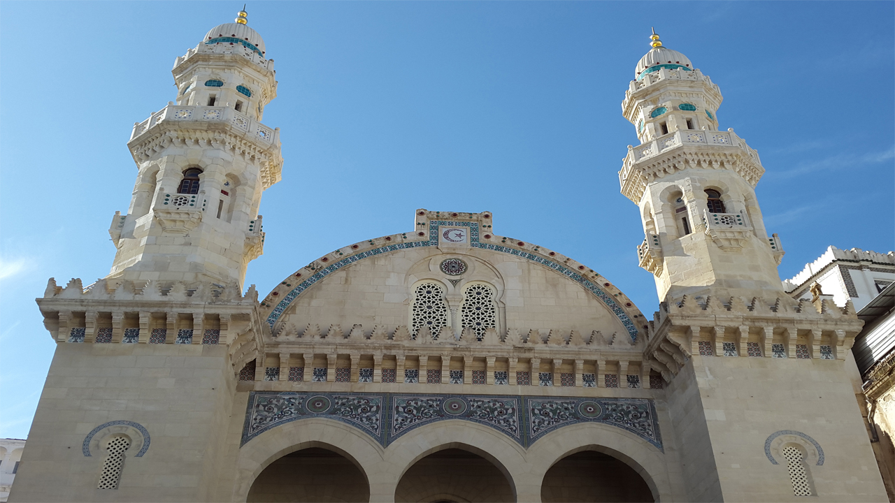

En 710, la conquête musulmane introduisit l'islam en Afrique du Nord. Le territoire d'Alger appartenait aux Maghraouas, une tribu berbère zénète. Ziri ibn Menad, vassal des Fatimides, vainquit les Berbères zénètes kharidjites. Après la mort d'Abu Yazid en 947, Ziri ibn Menad s'empara de la région du centre et fonda Achir comme capitale des Zirides. D'après Ibn Khaldoun, la région d'Alger fut occupée par les Sanhadjas avec la dynastie des Zirides. Le fils de Ziri ibn Menad avec l'autorisation de son père, Bologhine ibn Ziri, fonda trois villes dont Beni Mezghenna (Alger), Médéa et Miliana après avoir chassé les Zénètes. Bologhine ibn Ziri reconstruisit Icosium au milieu du xe siècle,en fortifiant et agrandissant le site occupé par les Beni Mezghenna et la baptisa « Djezaïr Beni Mezghenna », en 960. La guerre continua entre les Zénètes et les Sanhadjas. Ziri ibn Menad fut tué en 971 dans une bataille contre les Maghraouas, sa tête fut rapportée à Cordoue par les Maghraoua afin d'obtenir de l'aide pour affronter l'armée des Zirides, vassal des Fatimides. Les Zénètes vengèrent ainsi la mort d'Abu Yazid. C'est ainsi que Moez, calife fatimide, désigna Bologhine ibn Ziri comme calife du Maghreb. Ce dernier continua le combat contre les Zénètes. Ces derniers demandèrent alors l'aide des Omeyyades de Cordoue pour reprendre leur territoire et leurs villes y compris Alger. Bologhine ibn Ziri s’empare de presque tout le Maghreb en suivant les directives de Moez. Bologhine possédait toutes les villes du Maghreb, il avait pour ordre de tuer tous les Zénètes, de ramasser l'impôt des Berbères sous l'emprise de l'épée. Ceci provoqua une marche de contestation de la part des autres tribus. Les Kutama devinrent jaloux des Zirides et la guerre éclata entre les deux tribus ; Mila et Sétif furent rasées par les Zirides. Les Omeyyades acceptèrent enfin d'aider les Zénètes à reconquérir leurs territoires, en particulier des Maghraoua. Bologhine ibn Ziri rebroussa chemin en voyant toute l'armée des Zénètes venue d'Andalousie par voie maritime qui s'installa à Ceuta. En 983, Bologhine ibn Ziri mourut. S'ensuivit une longue période de défaite pour les Zirides. Les Maghraouas regagnèrent leurs territoires et leur souveraineté dans le Maghreb central et dans l'Ouest grâce à Ziri Ibn Attia issue des Maghraouas. Toutes les villes du Centre jusqu'à Tanger redevinrent des villes Zénètes, y compris Alger. Les Fatimides voulaient prendre l'Al-Andalus, mais ils décidèrent d'abandonner ce projet pour garder l'Égypte et les autres provinces. Les Zirides restèrent souverains dans leurs territoires à l'est de l'Algérie ainsi que les Hammadides (tribu des Sanhadja). Les Almoravides prirent Alger en 1082 grâce à Youssef Ibn Tachfin. Ce dernier défit tous les Zénètes. La première grande mosquée du rite malikiste Djamaâ el Kebir ou la Grande Mosquée (de 1097) y fut construite par Youssef Ibn Tachfin. Les Almoravides n'ont jamais fait la guerre contre les Zirides, les deux tribus sont des Sanhadjas. En 1151, Abd al-Mumin (Almohades), un Berbère zénète, reprit Alger ainsi que tout le Maghreb et l'Andalousie aux Almoravides. Par la suite, Alger fut rattachée aux capitales des dynasties Zianides, ainsi que Hafsides et Mérinides pour des courtes périodes. Longtemps la ville fut dépendante de Tlemcen sous les dynasties Ifrenides, Maghraouides, Almoravides, Almohades et Zianides.
En 1830, après 3 ans de blocus, le roi Charles X prétexta de l'aggravation d'un contentieux commercial entre la France et la régence d'Alger pour envoyer un corps expéditionnaire commandé par le général de Bourmont, ministre de la guerre, afin que celui-ci prît possession de la ville qui tomba le 5 juillet 1830, trois semaines après avoir débarqué à Sidi-Ferruch situé à 30 km à l'ouest. Les troupes du général de Bourmont s'emparent du trésor d'Alger qui s'élève, selon Pierre Péan, à 500 millions de francs de l’époque (soit 4 milliards d’euros) dont une bonne partie est détournée. Présenté comme simple raid militaire punitif à l'origine, l'occupation française se prolongea pendant plus de 130 ans, et marqua profondément la cité qui comptait à peine 30 000 habitants à cette époque. La ville, bâtie en amphithéâtre sur un rocher dont l'inclinaison est tournée vers l'est, s'étendait alors, dans la partie comprise entre les actuels rue Benganif, boulevard Hahkad, la casbah (la citadelle) et le port, soit 3 200 mètres de remparts avec cinq portes (Bab El Oued, Bab Azzoun, Bab Dzira, Bab El Bhar et Bab Jedid) qui enfermaient environ 12 200 maisons de grandeurs diverses contenant toutes une cour d'une plus ou moins grande étendue, 103 mosquées, une dizaine de synagogues, 7 grandes casernes de janissaires, 150 fontaines et 60 cafés maures.
Alger se constitua en Zone autonome d'Alger, fin de l'année 1956 sous le commandement de Ramdane Abane et ensuite de Yacef Saâdi en 1957, joua aussi un rôle décisif durant la guerre d'Algérie (1954-1962), notamment pendant la bataille d'Alger, durant laquelle la 10e division parachutiste de l'armée française, à partir du 7 janvier 1957, mena la chasse aux indépendantistes algériens, sur ordre du garde des Sceaux François Mitterrand, qui lui donne tout pouvoir pour « éliminer les insurgés ». La ville comptait alors 884 000 habitants. Alger reste marquée par cet épisode caractérisé par une lutte sans quartier entre les indépendantistes œuvrant pour la libération du pays et l'Armée française menant des opérations de police et pratiquant la torture. Des opposants à l'ordre colonial, comme le jeune professeur de mathématiques Maurice Audin ou le leader nationaliste Larbi Ben M'hidi sont maintenant honorés depuis par la municipalité : des artères principales de la ville portent désormais leurs noms. La bataille d'Alger, remportée par le général Massu, reste cependant une réussite mitigée car si sur le plan militaire, en quelques mois, les principaux dirigeants du FLN sont arrêtés, l'action de ces derniers ainsi que les aspirations du peuple algérien apparaissent sous un jour nouveau aux yeux de l'opinion internationale. Un an plus tard, les manifestations du 13 mai lors de la crise de mai 1958 y consacrèrent la chute de la Quatrième République en France, ainsi que le retour du général De Gaulle aux affaires. Dans l'espoir d'une résolution rapide de la crise algérienne, on put alors voir d'immenses manifestations mêlant dans une liesse commune Européens et indigènes affirmant leur attachement indéfectible à la France et leur foi en la politique du général De Gaulle.
Le lieu et le « Groupe des 22 Le 25 juillet 1954, dans une modeste villa du Clos Salambier appartenant à Lyès Deriche, un misérable quartier musulman d'Alger, vingt-deux Algériens se prononcent « pour la révolution illimitée jusqu'à l'indépendance totale ». Ce sont tous des anciens de l'Organisation Spéciale, qui ont été convoqués dans la deuxième quinzaine de juin 1954. Les 22 personnes étaient :

Les Algériens célébrèrent dans une grande liesse populaire l'indépendance de l'Algérie le 5 juillet 1962. Le 19 juin 1965, à minuit, les chars de l’armée prirent position autour de la capitale, le président Ben Bella fut renversé73. Accueillant la plupart des révolutionnaires du monde entier et autres figures du tiers monde, ce qui fit dire au chef indépendantiste de Guinée-Bissau Amilcar Cabral : « Les chrétiens vont au Vatican, les musulmans à La Mecque et les révolutionnaires à Alger ».